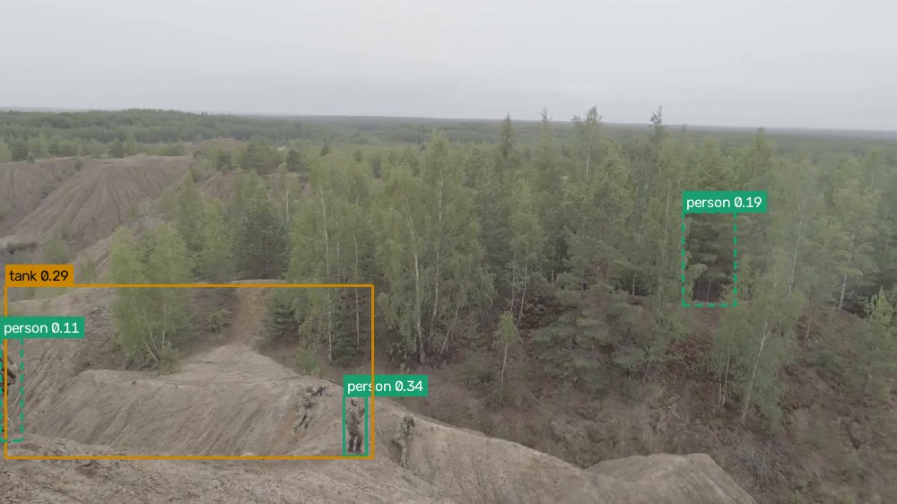
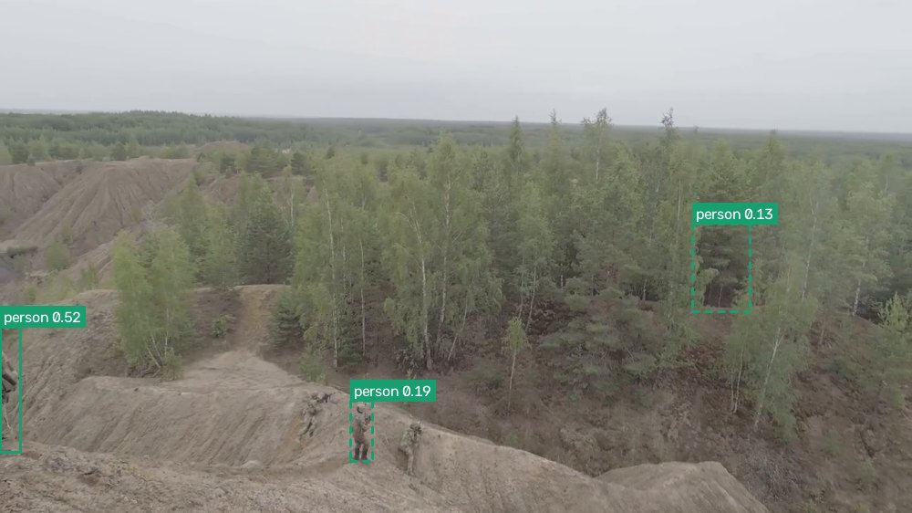
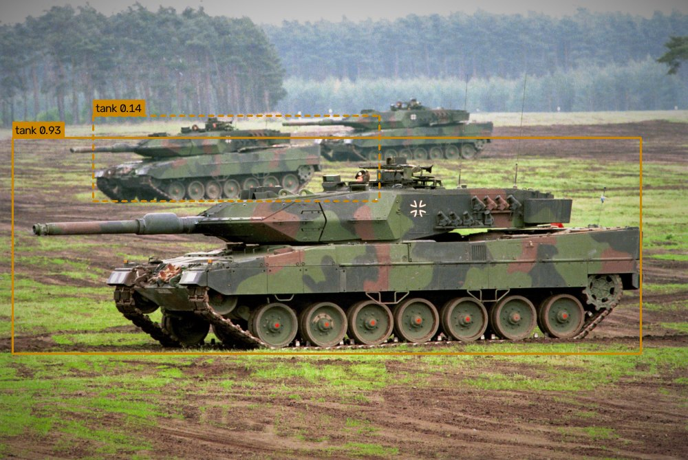
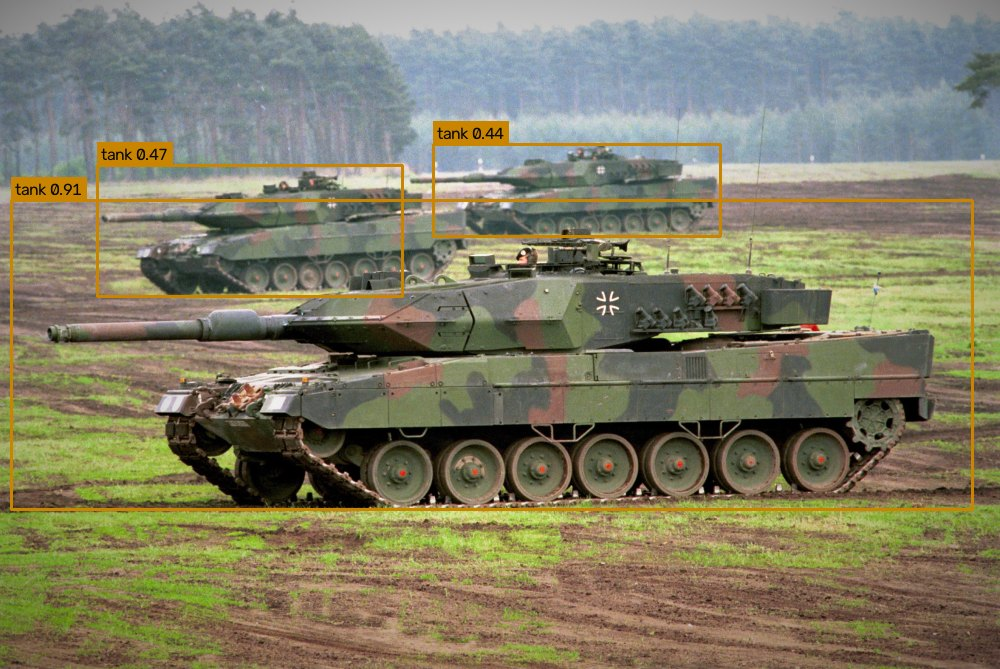
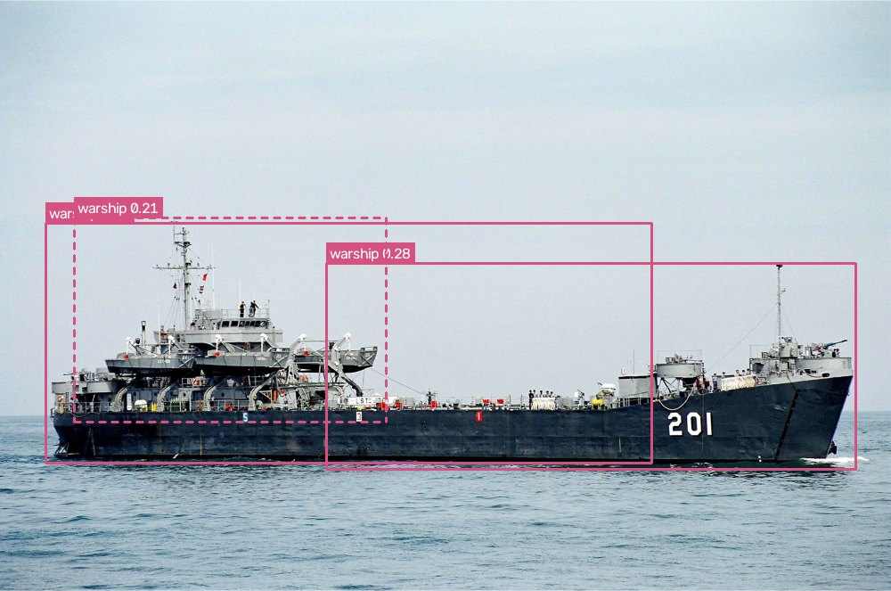
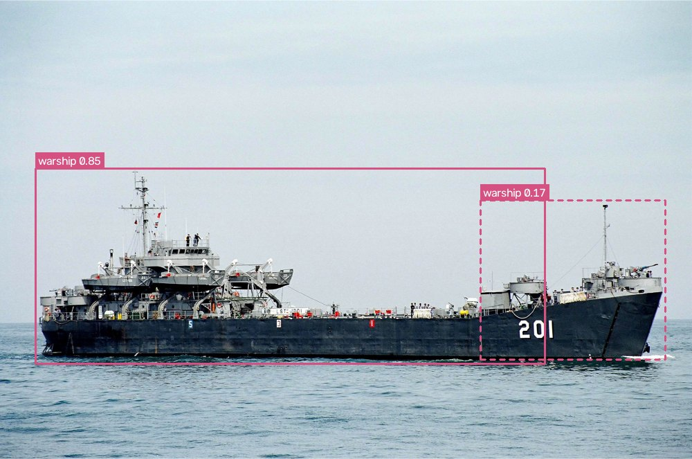
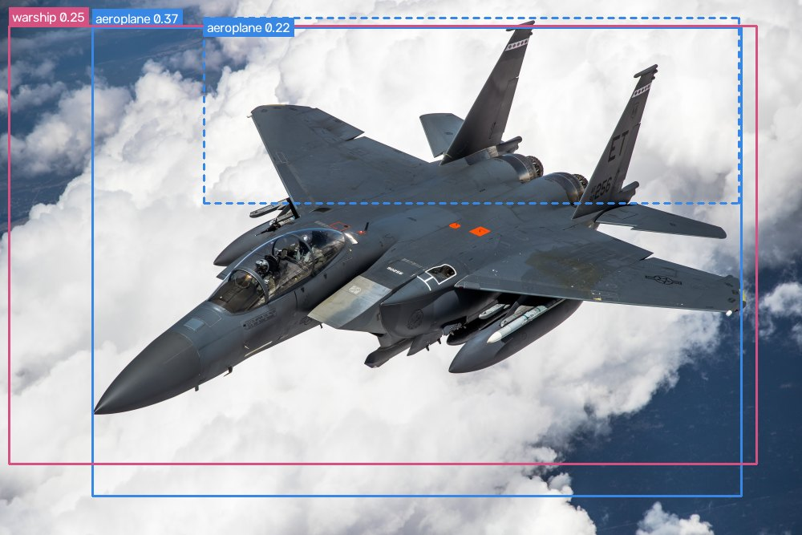
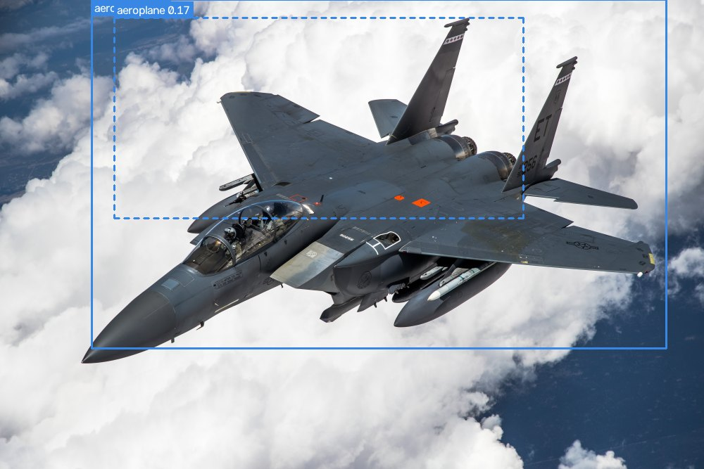

模型評估
本組模型兩個版本的成績、訓練過程、門檻的選擇，以及我們自己做的穩健度實驗與錯誤案例。網站目前使用 v2。訓練數據取自模型檔裡的訓練紀錄與 Colab 訓練資料夾。
模型資料 網站目前使用 v2
- 模型
- YOLO11m
- 參數量 / 運算量
- 20.0 M / 67.8 GFLOPs
- 輸入尺寸
- v1 640 → v2 800
- 類別
- 5 類
- 資料集
- MHCD2022 · 訓練 2400 張
- 訓練輪數
- v1 80 輪 ＋ v2 再 40 輪
- v2 資料增強
- Copy-Paste 0.5 · Mosaic 0.3
- 訓練環境
- Colab GPU · Ultralytics 8.3
驗證集成績 v2 best.pt（再訓練第 39 輪）
0.980mAP50
v1 0.887 → +0.093框和正確答案重疊 50% 以上就算對時的平均準確度。最常用來比較的指標。
0.819mAP50-95
v1 0.679 → +0.140要求框得越來越準（重疊 50% 到 95%）的平均。比 mAP50 嚴格，看的是框的位置精不精準。
0.942Precision 精確率
v1 0.856 → +0.086模型說「有目標」的結果裡，真的有的比例。越高代表誤判越少。
0.927Recall 召回率
v1 0.800 → +0.127畫面裡真正的目標，被模型找到的比例。越高代表漏掉越少。
四項指標都明顯進步，其中 Recall 進步最多（+0.127），正好補上 v1「容易漏掉目標」的弱點。v2 的改變是：輸入從 640 提高到 800，讓小目標有更多像素；加入 Copy-Paste 增強，把目標貼到不同背景上，讓模型學會在雜亂背景中找目標。
待確認：驗證集必須是訓練時沒用過的照片。MHCD2022 共 3000 張，訓練清單用了其中 2400 張，請確認 data.yaml 的 val 指向剩下的 600 張；如果驗證集和訓練集有重疊，上面的成績會高估實際表現。
訓練過程 v1 80 輪 ＋ v2 接續 40 輪
損失（越低越好）
- 框位置 box
- 分類 cls
- 虛線＝訓練集，實線＝驗證集
v1 在第 80 輪還沒練完，v2 接著練才到頂。v1 最後 10 輪 mAP50 仍從 0.873 升到 0.891。v2 剛開始時成績先掉到 0.769，因為輸入尺寸和資料增強都改了，模型需要重新適應；之後一路升到 0.980，最後幾輪已經趨於平穩，再練下去的進步空間不大。
信心度門檻怎麼選 網站預設 0.40
F1 曲線請把 BoxF1_curve.png 放到
F1 曲線：F1 同時考慮誤判和漏判，越高越好。粗藍線是五個類別的平均，在門檻 0.512 時最高（0.93）。
為什麼網站用 0.40，而不是 0.25 或 0.51
- 0.25 太低：這是 Ultralytics 的預設值。實際測試時，天空被標成戰機、槍被當成戰機這類誤判，信心度都落在 0.25～0.51 之間，門檻 0.25 會全部顯示出來。
- 0.51 是 F1 最高點，但會漏掉遠處目標：v2 找到的後方兩輛戰車信心度只有 0.47 和 0.44，門檻 0.51 會把它們刪掉。
- 0.40 幾乎一樣好：F1 曲線在 0.35～0.65 之間都在 0.92 以上，0.40 和最高點只差約 0.01，卻能留下遠處的目標。
- 0.40～0.60 標示「需確認」：這段的結果會顯示，但用虛線框提醒人工確認。
門檻可以在 model.json 的 conf 修改，照片和影片辨識頁也能用滑桿即時調整。
各類別表現 v2 驗證集，來自 Colab 訓練資料夾 train2
混淆矩陣請把 confusion_matrix_normalized.png 放到
混淆矩陣：每一欄是正確答案，每一列是模型的判斷。五個類別的對角線都在 0.95 以上，類別之間幾乎不會互相混淆。
PR 曲線請把 BoxPR_curve.png 放到
PR 曲線：調整門檻時精確率與召回率的取捨。曲線越靠右上角越好，圖例裡的數字是各類別的 AP50。
誤判主要來自「背景」，不是類別之間搞混。混淆矩陣最右邊的 background 欄代表「其實什麼都沒有，模型卻報了目標」：其中一半被報成人員（0.50），四分之一被報成戰機（0.25）。也就是樹叢、地形容易被當成人，天空、雲容易被當成戰機。這跟實際測試看到的錯誤一致，改善方法是在訓練資料加入沒有目標的背景照片。
穩健度實驗 模擬偵察車在不良條件下拍到的畫面
我們把 5 張樣本照片（每個類別一張）加上不同程度的干擾，記錄 v2 模型對正確類別的最高信心度。低於 0.40 代表模型在網站預設門檻下找不到這個目標。這是小樣本示範，完整測試集版本請用下方的 Colab 腳本。
v2 對距離的容忍度大幅提高。畫面縮到原本的 0.18 倍時，v2 對人員、軍用車輛的信心度仍有 0.83 和 0.91（v1 只有 0.54 和 0.24），這是輸入改成 800 的效果。但縮到 0.125 倍時，人員和軍用車輛還是幾乎找不到；長型的戰艦更早失效，縮到 0.25 倍就只剩 0.35。
模糊仍是最大的弱點。強烈模糊（強度 12）時，人員完全找不到，戰車、戰艦也降到 0.2 以下。偵察車行進中的晃動模糊，可能是實際使用時最需要注意的情況。
壓縮和變暗影響小，但 v2 對強烈雜訊比 v1 敏感。JPEG 品質降到 10 時，四個類別的信心度幾乎不變；亮度降到 0.25 倍也還能辨識。但在最強的雜訊下，v2 的軍用車輛只剩 0.26（v1 是 0.57），戰機只剩 0.08，代表新模型換來距離上的進步，在雜訊上反而退步。
戰機的反應仍然反常。畫面縮小時，戰機的信心度反而從 0.44 升到 0.89。訓練資料裡的戰機大多是遠處的小目標，模型不熟悉這種近距離、從上往下看的大戰機。
各類別表現 來自 Colab 訓練資料夾
這兩張圖由 Ultralytics 訓練時自動產生，在 Colab 的 runs/train/MHCD11m/ 資料夾裡。把圖片放到網站的
混淆矩陣請把 confusion_matrix_normalized.png 放到
混淆矩陣：每一類被認成哪一類的比例。對角線越接近 1 越好；不在對角線上的格子代表互相混淆。
PR 曲線請把 BoxPR_curve.png（舊版叫 PR_curve.png）放到
PR 曲線：調整門檻時精確率與召回率的取捨。圖例裡的數字是各類別的 AP50。
錯誤案例：v1 與 v2 對照
同一張圖分別交給 v1 和 v2，畫出信心度 0.1 以上的框。實線是預設門檻 0.40 以上、會顯示在網站上的結果；虛線是低於 0.40、預設不會顯示的結果。

v1
v2誤判已修正土堆不再被當成戰車
巡邏影片 0:15。v1 把土坡認成 tank（0.29），v2 沒有這個誤判，左邊的軍人也從 0.11 提高到 0.52。但中間兩名蹲低的軍人 v2 仍只有 0.19 和 0.13，偽裝與背景太相似的目標還是很難。

v1
v2漏判已改善後方兩輛戰車找到了
v1 只找到前面那輛（0.93），後方兩輛只有 0.14。v2 三輛都找到（0.91、0.47、0.44），這就是 Recall 提升的實際效果，也是網站門檻選 0.40 的原因。

v1
v2仍需改善重複框消失，但長型戰艦還是框不完整
v1 除了主框（0.88）還多出 0.28 的重複框；v2 只剩一個框（0.85），但還是只蓋住船身左側約八成。長寬比很大的目標是兩個版本共同的弱點。

v1
v2仍需改善戰艦誤判消失，但俯視戰機信心度仍偏低
v1 把雲海背景誤判成 warship（0.25），v2 沒有了。但這張從上往下拍的戰機，信心度只從 0.37 升到 0.44，會被標成「需確認」。訓練資料中這種角度的戰機可能太少。
結論與改進方向
目前的結論
- v2 明顯優於 v1：mAP50 從 0.887 提高到 0.980，Recall 從 0.800 提高到 0.927，漏判大幅減少。
- 提高輸入尺寸與 Copy-Paste 有效：遠處的小戰車找得到了，土堆被當成戰車這類背景誤判也消失。
- 誤判主要來自背景：樹叢被當成人、天空被當成戰機，這是目前最主要的錯誤來源。
- 門檻 0.40 加人工確認：大部分誤判的信心度低於 0.5，配合「需確認」標示，可以在不漏掉遠處目標的情況下，把誤判交給人判斷。
下一步可以做的事
- 加入背景照片：收集只有天空、雲、樹林、雪地、海面，沒有任何目標的照片（標註檔留空），約占訓練集 5～10%，直接針對背景誤判。
- 補充難例：雪地偽裝人員、蹲低或趴下的人員、俯視角度的戰機、長型戰艦、自走砲與飛彈車，並先定義清楚這些物體屬於哪一類。
- 確認驗證集獨立：確定驗證集和訓練集沒有重疊，成績才可信。
- 用完整測試集重做穩健度實驗：在 Colab 執行下面的腳本，得到每種干擾下的 mAP，取代上面的小樣本結果。
下載 Colab 穩健度實驗腳本